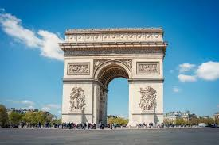
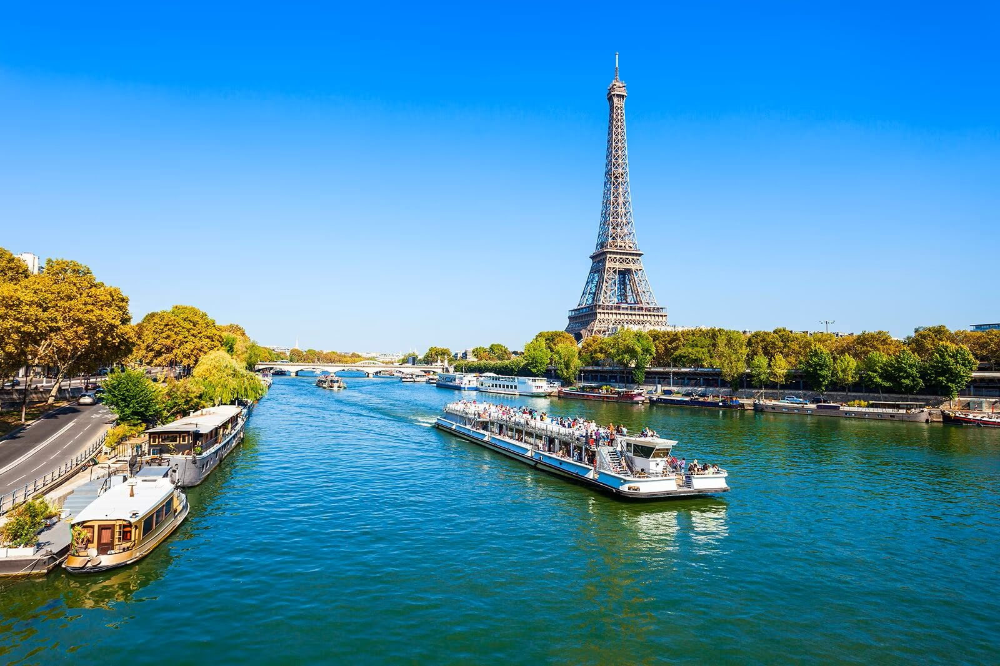
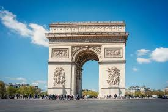
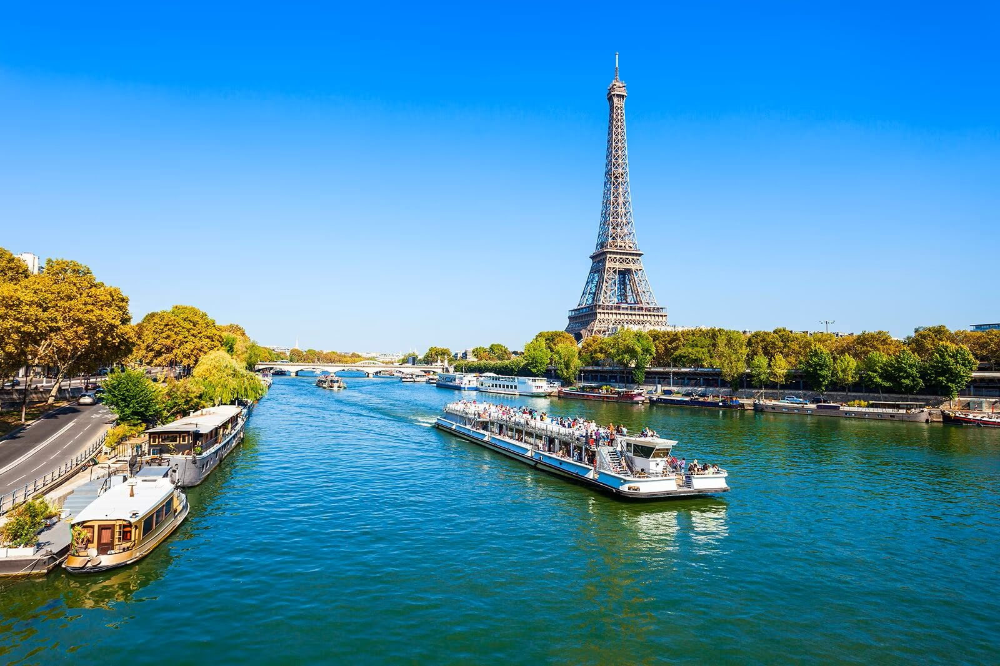

París - La Ciudad de la Luz

Historia y Cultura
París es la capital de Francia y una de las ciudades más visitadas del mundo. Conocida como la Ciudad de la Luz, París es famosa por su arte, arquitectura, cultura y gastronomía.
 



Lugares de Interés
- Torre Eiffel: El monumento más icónico de París, construida en 1889.
- Museo del Louvre: El museo de arte más grande del mundo, hogar de la Mona Lisa.
- Catedral de Notre-Dame: Una obra maestra de la arquitectura gótica.
- Arco del Triunfo: Monumento que honra a los caídos en las guerras de Francia.
- Campos Elíseos: La avenida más famosa de París.
Datos Interesantes
- Población: Aproximadamente 2.2 millones de habitantes
- Idioma: Francés
- Mejor época para visitar: Primavera (abril-junio) y otoño (septiembre-octubre)
- Moneda: Euro
Gastronomía
París es mundialmente conocida por su exquisita gastronomía. No puedes dejar de probar los croissants, baguettes, quesos franceses, macarons y los famosos vinos de la región.